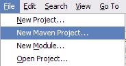
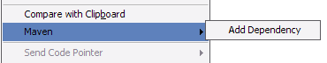
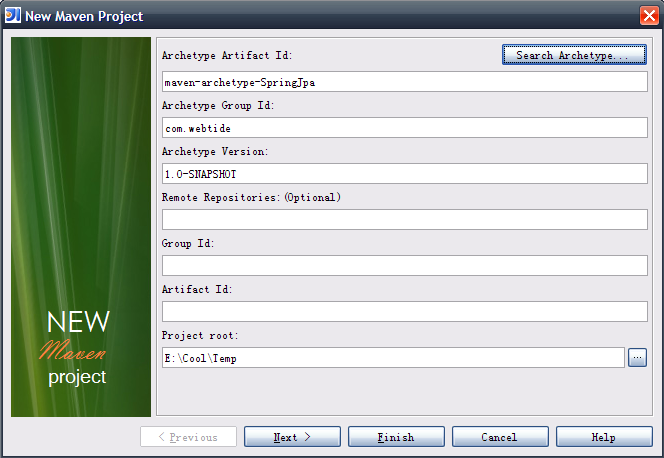
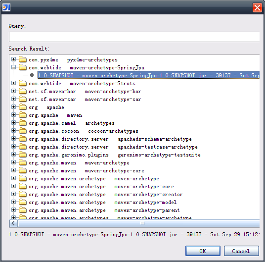
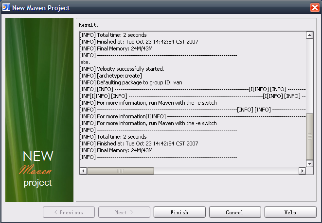

Introduce
Maven Project Helper will generate maven 2 project skeleton from various archetype. When it was installed, it add a "New Maven Project..." menu at File menu after "New Project...". it also add Editor popup menu named "maven|Add Dependency".
 
Create your maven project
1. Just click File menu and select "New Maven Project...", a "Create Maven Project Wizard" dialog will display. Show as:

2.1. Click "Search archetype..." button to search and select archetype from repository.

2.2. OR Fill in all field by hand.
| Name | Description |
|---|---|
| Archetype Artifact Id | The Archetype Artifact Id to be used. Default value is maven-archetype-quickstart |
| Archetype Group Id | The Archetype Group Id to be used. Default value is org.apache.maven.archetypes |
| Archetype Version | The Archetype Version to be used. Default value is RELEASE |
| Remote Repositories | Other remote repositories available for discovering dependencies and extensions. This field is Optional. |
| Group Id | The Group Id of the project to be build. |
| Artifact Id | The Artifact Id of the project to be build. |
| Project Root | The base dir of project. |
3. Click Next and waiting...when it down, the RESULT will displayed. If you want to ignore the result page, Just click Finish button.

Environment
You need to install Maven 2.0.7 and set the M2_HOME system environment as maven’s README said.